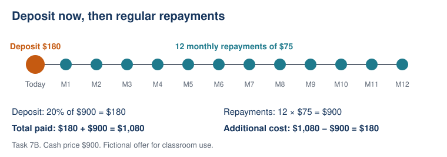

Lesson 7: Paying for a Purchase Over Time
Year level: Year 10 — Stage 5Duration: 60 minutesFocal concept/topic: Paying for a Purchase Over Time | |
Lesson aim: Calculate complete payment-plan costs and distinguish total cost from payment manageability. | |
Learning intention: We are learning to calculate and compare the complete cost of purchases paid over time. Success criteria: □ I can calculate a percentage deposit and the number and total of repayments. | |
Syllabus outcomes and content: MA5-FIN-C-01; MAO-WM-01. Relevant content (paraphrased): Calculate purchase costs when an initial deposit is followed by regular repayments. | Working Mathematically indicators: Organise deposits and repeated payments; justify unequal-duration comparisons; identify limits of a conclusion based on incomplete information. |
ICT: Calculator use supports arithmetic only. | LIT: Explicit financial vocabulary; annotate offer terms; “Plan __ costs $__ in total, compared with $__; therefore …”; silent writing and partner rehearsal before sharing. |
Prerequisite knowledge: Percentages of amounts; addition and multiplication of money; 12 months in a year; calculator use. Students have studied earning money and simple interest in the proposed sequence, but this lesson does not require a loan-interest formula. | Resources: Calculators; mini-whiteboards/A–D cards; board; printed Tasks 7A–7F below; labelled calculation rows; payment timeline; observation checklist; exit ticket. |
Labels used in this plan: WM Working Mathematically LIT Literacy ICT Technology AfL Assessment for learning AoL Assessment of learning
Key teacher question → Expected: suggested student response. Self-designed WM indicators are in italics.
Teaching sequence
| Steps & timing | Teaching & learning activities |
|---|---|
| ORIENTATION0–6 minContext and retrieval | Teacher: Present a fictional $900 purchase. Reveal LI/SC and inquiry: “Can a smaller monthly repayment cost more overall?” Use Task 7A. Students: Independently calculate 20% of $900 and payments per year. AfL Simultaneous responses; refresh percentage conversion or months only where needed. |
| ENHANCING6–18 minExplicit model | Teacher: Model Task 7B with separate deposit, repayments and total rows. Draw: deposit now → 12 monthly payments. Students: Annotate calculations and explain why the deposit is counted once. WM LIT Ask “Is repayment total the same as total paid?” Expected: no; add the deposit. |
| ENHANCING18–21 minHinge check | Teacher: Display Task 7C; collect individual A–D answers simultaneously. AfL Identify structural errors separately from arithmetic errors. At least 80% correct: proceed with targeted prompts. Below 80%: use next segment to remodel dominant error. The threshold is a pacing rule, not proof of mastery. |
| ENHANCING21–26 minResponsive teaching | Teacher: Reteach the dominant hinge error on a timeline, or use Task 7D as a partially worked transfer if secure. Students: All answer Task 7D independently to check transfer. AfL Check one deposit, correct payment count and inclusion of both amounts. |
| ENHANCING26–43 minMain comparison | Teacher: Give Task 7E. Students calculate both plans individually before partner comparison. Then reveal buyer limits. WM LIT Require three separate conclusions: lower cost; fitting stated limits; what remains unknown. AfL Observe complete calculation, comparison and interpretation using I/P/N checklist. |
| ENHANCING43–48 minAdvertising prompt | Teacher: Display “Laptop from $65 a month”. Students: Identify missing cash price, deposit, payment count/frequency, total and possible charges. LIT WM Explain why the monthly figure alone is insufficient. |
| SYNTHESIZING48–55 minConsolidation | Students: Rehearse an evidence-based explanation with a partner; revise an anonymous claim: “B is cheaper because $65 is less than $105.” Expected: B has a smaller monthly payment but costs $180 more overall. Teacher: Revisit success criteria and clarify cost versus affordability. |
| SYNTHESIZING55–60 minIndependent exit | Students: Complete Task 7F without partner help. AfL Collect calculations and explanations. Next lesson, respond to deposit, payment-count or comparison errors separately. Contingency: Shorten public sharing if needed; retain independent exit evidence. |
Tasks and worked answers — printable resource
7A Retrieval: Find 20% of $900; how many monthly payments are in one year? Answers: 0.20 × 900 = $180; 12 payments.
7B Model: Cash price $900; 20% deposit followed by $75 monthly for 12 months; no other charges. Deposit = $180. Repayments = 12 × $75 = $900. Total paid = $180 + $900 = $1,080. Additional cost = $1,080 − $900 = $180.
7C Hinge: Cash price $1,000; 20% deposit followed by $90 monthly for one year. A $1,280; B $1,080; C $1,190; D $290. Correct A: $200 + 12 × $90 = $1,280. B omits deposit; C uses 11 payments; D uses one payment.
7D Fresh check: Cash price $800; 10% deposit then $70 monthly for 12 months. Deposit $80; repayments $840; total $920; additional cost $120. Ask: “What must be added to $840?” Expected: the one-off $80 deposit.
7E Comparison: Cash price $1,200. Plan A: 20% deposit then $105 monthly for 12 months. Plan B: 10% deposit then $65 monthly for 24 months. Neither has other charges.
| Quantity | Plan A | Plan B |
|---|---|---|
| Deposit | $240 | $120 |
| Repayment total | $1,260 | $1,560 |
| Total paid | $1,500 | $1,680 |
| Additional cost | $300 | $480 |
Buyer statement: “I can pay no more than $150 upfront and $80 per month.” Questions: Which costs less overall? Which fits both limits? Does this prove affordability? Answers: A costs $180 less; only B fits both limits; no — income, essential expenses, other commitments and unexpected costs are unknown. Delaying or not buying is defensible. Extension: Find B’s monthly payment for equal total cost: 120 + 24m = 1,500, so m = $57.50.
7F Exit: Tablet cash price $600. X: 10% deposit plus $55 monthly for 12 months. Y: $120 deposit plus $95 monthly for 6 months. Calculate X’s deposit and total; compare. X: $60 + $660 = $720. Y: $120 + $570 = $690. Y costs $30 less despite its larger monthly repayment.
Vocabulary
| Term | Student-friendly definition |
|---|---|
| Cash price | Price paid for the item outright. |
| Deposit | Initial amount paid before the later repayments. |
| Instalment / repayment | One scheduled payment. |
| Duration | How long the payment plan lasts. |
| Repayment total | Sum of the scheduled repayments, excluding the initial deposit in these offers. |
| Total paid | Deposit plus all repayments and any separately stated charges. |
| Additional cost | Total paid minus cash price. |
| Affordability | Whether a person can meet payments while covering other needs and commitments. |

Adjustments and anticipated misconceptions
| Barrier / misconception | Specific support and retained demand |
|---|---|
| Percentage confusion | Use 10% as one tenth, then build 20%; retain the same deposit calculation. |
| Omitting deposit / miscounting payments | Provide separately labelled rows and a timeline; require payment count before multiplication. |
| Language / participation barriers | Offer vocabulary, sentence frame and partner rehearsal; every student still writes their own comparison. |
| Early finisher | Use the equal-total monthly-payment extension; require equation and interpretation. |
Observation checklist: Record Complete calculation / Evidence-based comparison / Careful interpretation for each student as I (independent), P (prompted) or N (not yet). Partner observations show process; the individual exit is the stronger transfer evidence.
Curriculum source and planning acknowledgement
NSW Education Standards Authority. (2022). Mathematics K–10 syllabus: Stage 5, Financial mathematics A. https://curriculum.nsw.edu.au/learning-areas/mathematics/mathematics-k-10-2022/content/stage-5/facb3aa952 (checked 6 October 2026). Content links are paraphrased; italicised Working Mathematically indicators are teacher-designed, not separate official outcome codes.
Adapted from Georgia Wang’s Assignment 1, Appendix 1: Paying for a Purchase Over Time. Original numerical model, hinge, main comparison and exit ticket are retained. Explicit curriculum, literacy and assessment labels, vocabulary definitions and the transfer-check solution have been added.
All offer terms are fictional classroom data, not current financial-product or legal information. Each lesson totals 60 minutes. Support should respond to observed student work, and all learners retain the core calculation and reasoning goals.